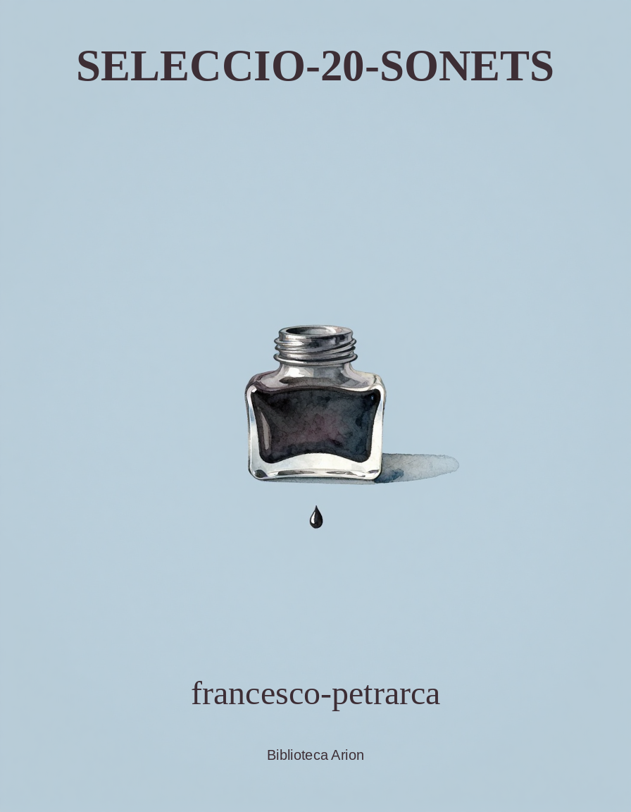

Seleccio-20-Sonets
Fifteen sonnets of Petrarch
Autor: –autor Font: gutenberg Llengua: –obra
[Transcriber’s Note: Printer errors in the Italian sonnets are noted in the Transcriber’s Note at the end of this file, along with a list of the corresponding sonnet numbers in Il Canzoniere.]
FIFTEEN SONNETS OF PETRARCH
[Illustration]
SELECTED AND TRANSLATED BY THOMAS WENTWORTH HIGGINSON PUBLISHED BY HOUGHTON MIFFLIN & COMPANY BOSTON AND NEW YORK MDCCCCIII
COPYRIGHT 1900 AND 1903 BY THOMAS WENTWORTH HIGGINSON ALL RIGHTS RESERVED
INTRODUCTION
NOTE
This introduction is based essentially upon a paper ‘Sunshine and Petrarch’ which originally included most of the sonnets in this volume. It was written at Newport, R.I., where the translator was then residing.
INTRODUCTION
Near my summer home there is a little cove or landing by the bay, where nothing larger than a boat can ever anchor. I sit above it now, upon the steep bank, knee-deep in buttercups, and amid grass so lush and green that it seems to ripple and flow instead of waving. Below lies a tiny beach, strewn with a few bits of driftwood and some purple shells, and so sheltered by projecting walls that its wavelets plash but lightly. A little farther out the sea breaks more roughly over submerged rocks, and the waves lift themselves, before breaking, in an indescribable way, as if each gave a glimpse through a translucent window, beyond which all ocean’s depths might be clearly seen, could one but hit the proper angle of vision. On the right side of my retreat a high wall limits the view, while close upon the left the crumbling parapet of Fort Greene stands out into the foreground, its verdant scarp so relieved against the blue water that each inward bound schooner seems to sail into a cave of grass. In the middle distance is a white lighthouse, and beyond lie the round tower of old Fort Louis, and the soft low walls of Conanicut.
Behind me an oriole chirrups in triumph amid the birch-trees which wave around the house of the haunted window; before me a kingfisher pauses and waits, and a darting blackbird shows the scarlet on his wings. Sloops and schooners constantly come and go, careening in the wind, their white sails taking, if remote enough, a vague blue mantle from the delicate air. Sailboats glide in the distance,–each a mere white wing of canvas,–or coming nearer, and glancing suddenly into the cove, are put as suddenly on the other tack, and almost in an instant seem far away. There is to-day such a live sparkle on the water, such a luminous freshness on the grass, that it seems, as is often the case in early June, as if all history were a dream, and the whole earth were but the creation of a summer’s day.
If Petrarch still knows and feels the consummate beauty of these earthly things, it may seem to him some repayment for the sorrows of a lifetime that one reader, after all this lapse of years, should choose his sonnets to match this grass, these blossoms, and the soft lapse of these blue waves. Yet any longer or more continuous poem would be out of place to-day. I fancy that this narrow cove prescribes the proper limits of a sonnet; and when I count the lines of ripple within yonder projecting wall, there proves to be room for just fourteen. Nature meets our whims with such little fitnesses. The words which build these delicate structures of Petrarch’s are as soft and fine and close-textured as the sands upon this tiny beach, and their monotone, if such it be, is the monotone of the neighboring ocean. Is it not possible, by bringing such a book into the open air, to separate it from the grimness of commentators, and bring it back to life and light and Italy? The beautiful earth is the same as when this poetry and passion were new; there is the same sunlight, the same blue water and green grass; yonder pleasure-boat might bear, for aught we know, the friends and lovers of five centuries ago; Petrarch and Laura might be there, with Boccaccio and Fiammetta as comrades, and with Chaucer as their stranger guest. It bears, at any rate, if I know its voyagers, eyes as lustrous, voices as sweet. With the world thus young, beauty eternal, fancy free, why should these delicious Italian pages exist but to be tortured into grammatical examples? Is there no reward to be imagined for a delightful book that can match Browning’s fantastic burial of a tedious one? When it has sufficiently basked in sunshine, and been cooled in pure salt air, when it has bathed in heaped clover, and been scented, page by page, with melilot, cannot its beauty once more blossom, and its buried loves revive?
Emboldened by such influences, at least let me translate a sonnet (Lieti fiori e felici), and see if anything is left after the sweet Italian syllables are gone. Before this continent was discovered, before English literature existed, when Chaucer was a child these words were written. Yet they are to-day as fresh and perfect as these laburnum blossoms that droop above my head. And as the variable and uncertain air comes freighted with clover-scent from yonder field, so floats through these long centuries a breath of fragrance, the memory of Laura.
Goethe compared translators to carriers, who convey good wine to market, though it gets unaccountably watered by the way. The more one praises a poem, the more absurd becomes one’s position, perhaps, in trying to translate it. If it is so admirable,–is the natural inquiry,–why not let it alone? It is a doubtful blessing to the human race, that the instinct of translation still prevails, stronger than reason; and after one has once yielded to it, then each untranslated favorite is like the trees round a backwoodsman’s clearing, each of which stands, a silent defiance, until he has cut it down. Let us try the axe again. This is to Laura singing (Quando Amor).
As I look across the bay, there is seen resting over all the hills, and even upon every distant sail, an enchanted veil of palest blue, that seems woven out of the very souls of happy days,–a bridal veil, with which the sunshine weds this soft landscape in summer. Such and so indescribable is the atmospheric film that hangs over these poems of Petrarch’s; there is a delicate haze about the words, that vanishes when you touch them, and reappears as you recede. How it clings, for instance, round this sonnet (Aura che quelle chiome)!
Consider also the pure and reverential tenderness of one like this (Qual donna attende). A companion sonnet, on the other hand (O passi sparsi), seems rather to be of the Shakespearean type; the successive phrases set sail, one by one, like a yacht squadron; each spreads its graceful wings and glides away. It is hard to handle this white canvas without soiling. Macgregor, in the only version of this sonnet which I have seen, abandons all attempt at rhyme; but to follow the strict order of the original in this respect is a part of the pleasant problem which one cannot bear to forgo. And there seems a kind of deity who presides over this union of languages, and who sometimes silently lays the words in order, after all one’s poor attempts have failed.
Yonder flies a kingfisher, and pauses, fluttering like a butterfly in the air, then dives toward a fish, and, failing, perches on the projecting wall. Doves from neighboring dove-cots alight on the parapet of the fort, fearless of the quiet cattle who find there a breezy pasture. These doves, in taking flight, do not rise from the ground at once, but, edging themselves closer to the brink, with a caution almost ludicrous in such airy things, thrust themselves upon the breeze with a shy little hop, and at the next moment are securely on the wing.
How the abundant sunlight inundates everything! The great clumps of grass and clover are imbedded in it to the roots; it flows in among their stalks, like water; the lilac-bushes bask in it eagerly; the topmost leaves of the birches are burnished. A vessel sails by with plash and roar, and all the white spray along her side is sparkling with sunlight. Yet there is sorrow in the world, and it reached Petrarch even before Laura died,–when it reached her. One exquisite sonnet (I’ vidi in terra) shows this to have been true.
These sonnets are in Petrarch’s earlier manner; but the death of Laura brought a change. Look at yonder schooner coming down the bay straight toward us; she is hauled close to the wind, her jib is white in the sunlight, her larger sails are touched with the same snowy lustre, and all the swelling canvas is rounded into such lines of beauty as scarcely anything else in the world–hardly even the perfect outlines of the human form–can give. Now she comes up into the wind, and goes about with a strong flapping of her sails, smiting on the ear at a half-mile’s distance; then she glides off on the other tack, showing the shadowed side of her sails, until she reaches the distant zone of haze. So change the sonnets after Laura’s death, growing shadowy as they recede, until the very last (Gli occhi di ch’io parlai) seems to merge itself in the blue distance.
“And yet I live!” (Ed io pur vivo) What a pause is implied before these words with which the closing sestet of this sonnet begins! the drawing of a long breathy immeasurably long; like that vast interval of heart-beats which precedes Shakespeare’s ‘Since Cleopatra died.’ I can think of no other passage in literature that has in it the same wide spaces of emotion. Another sonnet (Soleasi nel mio cor) which is still more retrospective, seems to me the most stately and concentrated in the whole volume. It is the sublimity of a despair not to be relieved by utterance. In a later strain (Levommi il mio pensier) he rises to that dream which is more than earth’s realities.
It vindicates the emphatic reality and personality of Petrarch’s love, after all, that when from these heights of vision he surveys and resurveys his life’s long dream, it becomes to him more and more definite, as well as more poetic, and is farther and farther from a merely vague sentimentalism. In his later sonnets, Laura grows more distinctly individual to us; her traits show themselves as more characteristic, her temperament more intelligible, her precise influence upon Petrarch clearer. What delicate accuracy of delineation is seen, for instance, in the sonnet (Dolci durezze)! In the sonnet (Gli angeli eletti) visions multiply upon visions. Would that one could transfer into English the delicious way in which the sweet Italian rhymes recur and surround and seem to embrace each other, and are woven and unwoven and interwoven, like the heavenly hosts that gathered around Laura.
Petrarch’s odes and sonnets are but parts of one symphony, leading us through a passion strengthened by years and only purified by death, until at last the graceful lay becomes an anthem and a ‘Nunc dimittis.’ In the closing sonnets Petrarch withdraws from the world, and they seem like voices from a cloister, growing more and more solemn till the door is closed. This is one of the last (Dicemi spesso). How true is its concluding line! Who can wonder that women prize beauty, and are intoxicated by their own fascinations, when these fragile gifts are yet strong enough to outlast all the memories of statesmanship and war? Next to the immortality of genius is that which genius may confer upon the object of its love. Laura, while she lived, was simply one of a hundred or a thousand beautiful and gracious Italian women; she had her loves and aversions, joys and griefs; she cared dutifully for her household, and embroidered the veil which Petrarch loved; her memory appeared as fleeting and unsubstantial as that of woven tissue. After five centuries we find that no armor of that iron age was so enduring. The kings whom she honored, the popes whom she revered are dust, and their memory is dust, but literature is still fragrant with her name. An impression which has endured so long is ineffaceable; it is an earthly immortality.
“Time is the chariot of all ages to carry men away, and beauty cannot bribe this charioteer.” Thus wrote Petrarch in his Latin essays; but his love had wealth that proved resistless, and for Laura the chariot stayed.
SONNETS
I
Lieti fiori e felici, e ben nate erbe,
Che Madonna, pensando, premer sole;
Piaggia ch'ascolti sue dolci parole,
E del bel piede alcun vestigio serbe;
Schietti arboscelli, e verdi frondi acerbe;
Amorosette e pallide viole;
Ombrose selve, ove percote il Sole,
Che vi fa co' suoi raggi alte e superbe;
O soave contrada, o puro fiume,
Che bagni 'l suo bel viso e gli occhi chiari,
E prendi qualità dal vivo lume;
Quanto v'invidio gli atti onesti e cari!
Non fia in voi scoglio omai che per costume
D'arder con la mia fiamma non impari.
I
O joyous, blossoming, ever-blessed flowers!
'Mid which my pensive queen her footstep sets;
O plain, that hold'st her words for amulets
And keep'st her footsteps in thy leafy bowers!
O trees, with earliest green of springtime hours,
And all spring's pale and tender violets!
O grove, so dark the proud sun only lets
His blithe rays gild the outskirts of thy towers!
O pleasant country-side! O limpid stream,
That mirrorest her sweet face, her eyes so clear,
And of their living light canst catch the beam!
I envy thee her presence pure and dear.
There is no rock so senseless but I deem
It burns with passion that to mine is near.
II
Quando Amor i begli occhi a terra inchina
E i vaghi spirti in un sospiro accoglie
Con le sue mani, e poi in voce gli scioglie
Chiara, soave, angelica, divina;
Sento far del mio cor dolce rapina,
E sì dentro cangiar pensieri e voglie,
Ch'i' dico: or fien di me l'ultime spoglie,
Se 'l Ciel sì onesta morte mi destina.
Ma 'l suon, che di dolcezza i sensi lega,
Col gran desir d'udendo esser beata,
L'anima, al dipartir presta, raffrena.
Così mi vivo, e così avvolge e spiega
Lo stame della vita che m'è data,
Questa sola fra noi del ciel sirena.
II
When Love doth those sweet eyes to earth incline,
And weaves those wandering notes into a sigh
With his own touch, and leads a minstrelsy
Clear-voiced and pure, angelic and divine,--
He makes sweet havoc in this heart of mine,
And to my thoughts brings transformation high,
So that I say, "My time has come to die,
If fate so blest a death for me design."
But to my soul, thus steeped in joy, the sound
Brings such a wish to keep that present heaven,
It holds my spirit back to earth as well.
And thus I live: and thus is loosed and wound
The thread of life which unto me was given
By this sole Siren who with us doth dwell.
III
Aura che quelle chiome bionde e crespe
Circondi e movi, e se' mossa da loro
Soavemente, e spargi quel dolce oro,
E poi 'l raccogli e 'n bei nodi 'l rincrespe;
Tu stai negli occhi ond'amorose vespe
Mi pungon sì, che 'nfin qua il sento e ploro;
E vacillando cerco il mio tesoro,
Com'animal che spesso adombre e 'ncespe:
Ch'or mel par ritrovar, ed or m'accorgo
Ch'i' ne son lunge; or mi sollevo, or caggio:
Ch'or quel ch'i' bramo, or quel ch'è vero, scorgo.
Aer felice, col bel vivo raggio
Rimanti. E tu, corrente e chiaro gorgo,
Ché non poss'io cangiar teco viaggio?
III
Sweet air, that circlest round those radiant tresses,
And floatest, mingled with them, fold on fold,
Deliciously, and scatterest that fine gold,
Then twinest it again, my heart's dear jesses;
Thou lingerest on those eyes, whose beauty presses
Stings in my heart that all its life exhaust,
Till I go wandering round my treasure lost,
Like some scared creature whom the night distresses.
I seem to find her now, and now perceive
How far away she is; now rise, now fall;
Now what I wish, now what is true, believe.
O happy air! since joys enrich thee all,
Rest thee; and thou, O stream too bright to grieve!
Why can I not float with thee at thy call?
IV
Qual donna attende a gloriosa fama
Di senno, di valor, di cortesia,
Miri fiso negli occhi a quella mia
Nemica, che mia donna il mondo chiama.
Come s'acquista onor, come Dio s'ama,
Com'è giunta onestà con leggiadria,
Ivi s'impara, e qual è dritta via
Di gir al Ciel, che lei aspetta e brama.
Ivi 'l parlar che nullo stile agguaglia,
E 'l bel tacere, e quei santi costumi
Ch'ingegno uman non può spiegar in carte.
L'infinita bellezza, ch'altrui abbaglia,
Non vi s'impara; ché quei dolci lumi
S'acquistan per ventura e non per arte.
IV
Doth any maiden seek the glorious fame
Of chastity, of strength, of courtesy?
Gaze in the eyes of that sweet enemy
Whom all the world doth as my lady name!
How honor grows, and pure devotion's flame,
How truth is joined with graceful dignity,
There thou mayst learn, and what the path may be
To that high heaven which doth her spirit claim;
There learn that speech, beyond all poet's skill,
And sacred silence, and those holy ways
Unutterable, untold by human heart.
But the infinite beauty that all eyes doth fill,
This none can learn! because its lovely rays
Are given by God's pure grace, and not by art.
V
O passi sparsi, o pensier vaghi e pronti,
O tenace memoria, o fero ardore,
O possente desire, o debil core,
O occhi miei, occhi non già, ma fonti;
O fronde, onor delle famose fronti,
O sola insegna al gemino valore;
O faticosa vita, o dolce errore,
Che mi fate ir cercando piagge e monti;
O bel viso, ov'Amor insieme pose
Gli sproni e 'l fren, ond'e' mi punge e volve
Com'a lui piace, e calcitrar non vale;
O anime gentili ed amorose,
S'alcuna ha 'l mondo; e voi nude ombre e polve;
Deh restate a veder qual è 'l mio male.
V
O wandering steps! O vague and busy dreams!
O changeless memory! O fierce desire!
O passion strong! heart weak with its own fire;
O eyes of mine! not eyes, but living streams;
O laurel boughs! whose lovely garland seems
The sole reward that glory's deeds require!
O haunted life! delusion sweet and dire,
That all my days from slothful rest redeems;
O beauteous face! where Love has treasured well
His whip and spur, the sluggish heart to move
At his least will; nor can it find relief.
O souls of love and passion! if ye dwell
Yet on this earth, and ye, great Shades of Love!
Linger, and see my passion and my grief.
VI
I' vidi in terra angelici costumi
E celesti bellezze al mondo sole;
Tal che di rimembrar mi giova e dole;
Ché quant'io miro par sogni, ombre e fumi.
E vidi lagrimar que' duo bei lumi,
C'han fatto mille volle invidia al Sole;
Ed udii sospirando dir parole
Che farian gir i monti e stare i fiumi.
Amor, senno, valor, pietate e doglia
Facean piangendo un più dolce concento
D'ogni altro che nel mondo udir si soglia:
Ed era 'l cielo all'armonia sì 'ntento,
Che non si vedea 'n ramo mover foglia;
Tanta dolcezza avea pien l'aere e 'l vento.
VI
I once beheld on earth celestial graces
And heavenly beauties scarce to mortals known,
Whose memory yields nor joy nor grief alone,
But all things else in cloud and dreams effaces.
I saw how tears had left their weary traces
Within those eyes that once the sun outshone,
I heard those lips, in low and plaintive moan,
Breathe words to stir the mountains from their places.
Love, wisdom, courage, tenderness, and truth
Made in their mourning strains more high and dear
Than ever wove soft sounds for mortal ear;
And heaven seemed listening in such saddest ruth
The very leaves upon the bough to soothe,
Such sweetness filled the blissful atmosphere.
VII
Gli occhi di ch'io parlai sì caldamente,
E le braccia e le mani e i piedi e 'l viso
Che m'avean sì da me stesso diviso
E fatto singular dall'altra gente;
Le crespe chiome d'or puro lucente,
E 'l lampeggiar dell'angelico riso
Che solean far in terra un paradiso,
Poca polvere son, che nulla sente.
Ed io pur vivo; onde mi doglio e sdegno,
Rimaso senza 'l lume ch'amai tanto,
In gran fortuna e 'n disarmato legno.
Or sia qui fine al mio amoroso canto:
Secca è la vena dell'usato ingegno,
E la cetera mia rivolta in pianto.
VII
Those eyes, 'neath which my passionate rapture rose,
The arms, hands, feet, the beauty that erewhile
Could my own soul from its own self beguile,
And in a separate world of dreams enclose,
The hair's bright tresses, full of golden glows,
And the soft lightning of the angelic smile
That changed this earth to some celestial isle,--
Are now but dust, poor dust, that nothing knows.
And yet I live! Myself I grieve and scorn,
Left dark without the light I loved in vain,
Adrift in tempest on a bark forlorn;
Dead is the source of all my amorous strain,
Dry is the channel of my thoughts outworn,
And my sad harp can sound but notes of pain.
VIII
Soleasi nel mio cor star bella e viva,
Com'alta donna in loco umile e basso:
Or son fatt'io per l'ultimo suo passo,
Non pur mortal ma morto; ed ella è diva.
L'alma d'ogni suo ben spogliata e priva,
Amor della sua luce ignudo e casso
Devrian della pietà romper un sasso:
Ma non è chi lor duol riconti o scriva;
Ché piangon dentro, ov'ogni orecchia è sorda,
Se non la mia, cui tanta doglia ingombra,
Ch'altro che sospirar, nulla m'avanza.
Veramente siam noi polvere ed ombra;
Veramente la voglia è cieca e 'ngorda;
Veramente fallace è la speranza.
VIII
She ruled in beauty o'er this heart of mine,
A noble lady in a humble home,
And now her time for heavenly bliss has come,
'Tis I am mortal proved, and she divine.
The soul that all its blessings must resign,
And love whose light no more on earth finds room
Might rend the rocks with pity for their doom,
Yet none their sorrows can in words enshrine;
They weep within my heart; no ears they find
Save mine alone, and I am crushed with care,
And naught remains to me save mournful breath.
Assuredly but dust and shade we are;
Assuredly desire is mad and blind;
Assuredly its hope but ends in death.
IX
Levommi il mio pensier in parte ov'era
Quella ch'io cerco e non ritrovo in terra:
Ivi, fra lor che 'l terzo cerchio serra,
La rividi più bella e meno altera.
Per man mi prese e disse: in questa spera
Sarai ancor meco, se 'l desir non erra;
I' son colei che ti die' tanta guerra,
E compie' mia giornata innanzi sera.
Mio ben non cape in intelletto umano:
Te solo aspetto, e, quel che tanto amasti,
E laggiuso è rimaso, il mio bel velo.
Deh perchè tacque ed allargò la mano?
Ch'al suon de' detti sì pietosi e casti
Poco mancò ch'io non rimasi in cielo.
IX
Dreams bore my fancy to that region where
She dwells whom here I seek, but cannot see.
'Mid those who in the loftiest heaven be
I looked on her, less haughty and more fair.
She took my hand, she said, "Within this sphere,
If hope deceive not, thou shalt dwell with me:
I filled thy life with war's wild agony;
Mine own day closed ere evening could appear.
My bliss no human thought can understand;
I wait for thee alone, and that fair veil
Of beauty thou dost love shall yet retain."
Why was she silent then, why dropped my hand
Ere those delicious tones could quite avail
To bid my mortal soul in heaven remain?
X
Dolci durezze e placide repulse,
Piene di casto amore e di pietate;
Leggiadri sdegni, che le mie infiammate
Voglie tempraro (or me n'accorgo) e 'nsulse;
Gentil parlar, in cui chiaro refulse
Con somma cortesia somma onestate;
Fior di virtù, fontana di beltate,
Ch'ogni basso pensier del cor m'avulse;
Divino sguardo, da far l'uom felice,
Or fiero in affrenar la mente ardita
A quel che giustamente si disdice,
Or presto a confortar mia frale vita;
Questo bel variar fu la radice
Di mia salute, che altramente era ita.
X
Gentle severity, repulses mild,
Full of chaste love and pity sorrowing;
Graceful rebukes, that had the power to bring
Back to itself a heart by dreams beguiled;
A tender voice, whose accents undefiled
Held sweet restraints, all duty honoring;
The bloom of virtue; purity's clear spring
To cleanse away base thoughts and passions wild;
Divinest eyes to make a lover's bliss,
Whether to bridle in the wayward mind
Lest its wild wanderings should the pathway miss,
Or else its griefs to soothe, its wounds to bind;
This sweet completeness of thy life it is
Which saved my soul; no other peace I find.
XI
Gli angeli eletti e l'anime beate
Cittadine del cielo, il primo giorno
Che Madonna passò, le fur intorno
Piene di maraviglia e di pietate.
Che luce è questa, e qual nova beltate?
Dicean tra lor; perch'abito sì adorno
Dal mondo errante a quest'alto soggiorno
Non salì mai in tutta questa etate.
Ella contenta aver cangiato albergo,
Si paragona pur coi più perfetti;
E parte ad or ad or si volge a tergo
Mirando s'io la seguo, e par ch'aspetti:
Ond'io voglie e pensier tutti al ciel ergo;
Perch'io l'odo pregar pur ch'i' m'affretti.
XI
The holy angels and the spirits blest,
Celestial bands, upon that day serene
When first my love went by in heavenly sheen,
Came thronging, wondering at the gracious guest.
"What light is here, in what new beauty drest?"
They said among themselves; "for none has seen
Within this age arrive so fair a mien
From changing earth unto immortal rest."
And she, contented with her new-found bliss,
Ranks with the perfect in that upper sphere,
Yet ever and anon looks back on this,
To watch for me, as if for me she stayed.
So strive my thoughts, lest that high heaven I miss.
I hear her call, and must not be delayed.
XII
Dicemi spesso il mio fidato speglio,
L'animo stanco e la cangiata scorza
E la scemata mia destrezza e forza;
Non ti nasconder più; tu se' pur veglio.
Obbedir a Natura in tutto è il meglio;
Ch'a contender con lei il tempo ne sforza.
Subito allor, com'acqua il foco ammorza,
D'un lungo e grave sonno mi risveglio:
E veggio ben che 'l nostro viver vola,
E ch'esser non si può più d'una volta;
E 'n mezzo 'l cor mi sona una parola
Di lei ch'è or dal suo bel nodo sciolta,
Ma ne' suoi giorni al mondo fu sì sola,
Ch'a tutte, s'i' non erro, fama ha tolta.
XII
Oft by my faithful mirror I am told,
And by my mind outworn and altered brow,
My earthly powers impaired and weakened now,--
"Deceive thyself no more, for thou art old!"
Who strives with Nature's laws is over-bold,
And Time to his commandment bids us bow.
Like fire that waves have quenched, I calmly vow
In life's long dream no more my sense to fold.
And while I think, our swift existence flies,
And none can live again earth's brief career,--
Then in my deepest heart the voice replies
Of one who now has left this mortal sphere,
But walked alone through earthly destinies,
And of all women is to fame most dear.
XIII
Vago augelletto che cantando vai,
Ovver piangendo il tuo tempo passato,
Vedendoti la notte e 'l verno a lato,
E 'l dì dopo le spalle e i mesi gai;
Se come i tuoi gravosi affanni sai,
Così sapessi il mio simile stato,
Verresti in grembo a questo sconsolato
A partir seco i dolorosi guai.
I' non so se le parti sarian pari;
Che quella cui tu piangi è forse in vita,
Di ch'a me Morte e 'l Ciel son tanto avari:
Ma la stagione e l'ora men gradita,
Col membrar de' dolci anni e degli amari,
A parlar teco con pietà m'invita.
XIII
Sweet wandering bird that singest on thy way,
Or mournest yet the time for ever past,
Watching night come and spring receding fast,
Day's bliss behind thee and the seasons gay,--
If thou my griefs against thine own couldst weigh,
Thou couldst not guess how long my sorrows last;
Yet thou mightst hide thee from the wintry blast
Within my breast, and thus my pains allay.
Yet may not all thy woes be named with mine,
Since she whom thou dost mourn may live, yet live,
But death and heaven still hold my spirit's bride;
And all those long past days of sad decline
With all the joys remembered years can give
Still bid me ask "Sweet bird! with me abide!"
XIV
La gola e 'l sonno e l'oziose piume
Hanno del mondo ogni vertù sbandita,
Ond'è dal corso suo quasi smarrita
Nostra natura, vinta dal costume;
Ed è sì spento ogni benigno lume
Del ciel, per cui s'informa umana vita,
Che per cosa mirabile s'addita
Chi vuol far d'Elicona nascer fiume.
Qual vaghezza di lauro? qual di mirto?
Povera e nuda vai, filosofia,
Dice la turba al vil guadagno intesa.
Pochi compagni avrai per l'altra via:
Tanto ti prego più, gentile spirto,
Non lassar la magnanima tua impresa.
XIV
Lust and dull slumber and the lazy hours
Have well nigh banished virtue from mankind.
Hence have man's nature and his treacherous mind
Left their free course, enmeshed in sin's soft bowers.
The very light of heaven hath lost its powers
Mid fading ways our loftiest dreams to find;
Men jeer at him whose footsteps are inclined
Where Helicon from dewy fountains showers.
Who seeks the laurel? who the myrtle twines?
"Wisdom, thou goest a beggar and unclad,"
So scoffs the crowd, intent on worthless gain.
Few are the hearts that prize the poet's lines:
Yet, friend, the more I hail thy spirit glad!
Let not the glory of thy purpose wane!
XV
Voi ch'ascoltate in rime sparse il suono
Di quei sospiri ond'io nudriva il core
In sul mio primo giovenile errore,
Quand' era in parte altr'uom da quel ch'i' sono;
Del vario stile, in ch'io piango e ragiono
Fra le vane speranze e 'l van dolore,
Ove sia chi per prova intenda amore,
Spero trovar pietà, non che perdono.
Ma ben veggi' or, sì come al popol tutto
Favola fui gran tempo: onde sovente
Di me medesmo meco mi vergogno:
E del mio vaneggiar vergogna è 'l frutto,
E 'l pentirsi, e 'l conoscer chiaramente
Che quanto piace al mondo è breve sogno.
XV
O ye who trace through scattered verse the sound
Of those long sighs wherewith I fed my heart
Amid youth's errors, when in greater part
That man unlike this present man was found;
For the mixed strain which here I do compound
Of empty hopes and pains that vainly start,
Whatever soul hath truly felt love's smart,
With pity and with pardon will abound.
But now I see full well how long I earned
All men's reproof; and oftentimes my soul
Lies crushed by its own grief; and it doth seem
For such misdeed shame is the fruitage whole,
And wild repentance and the knowledge learned
That worldly joy is still a short, short dream.
FOUR HUNDRED AND THIRTY COPIES PRINTED AT THE RIVERSIDE PRESS CAMBRIDGE, IN THE MONTH OF SEPTEMBER, MDCCCCIII. NUMBER 426
[Illustration]
[Transcriber’s Note: Below is a list of printer errors that have been corrected in the Italian sonnets, by reference to the 1964 critical edition of Il Canzoniere edited by Gianfranco Contini, available at Liber Liber, www.liberliber.it. The translator of this book probably used as his source an edition in which spelling and punctuation were somewhat modernized; these modernizations have not been altered in this e-book. Spacing of elisions (such as “ch’ascolti”) has been normalized. The original book was printed almost entirely in italics, which are not marked as such in this e-text. Printer errors in the English portions of this book have been corrected without note.
Sonnet Line Error Correction II 10 a’udendo d’udendo III 14 Che Ché IV 13 che ché VI 4 Che Ché VI 12 si sì VII 9 doglia doglio VIII 9 Che Ché
The sonnets in this book correspond to the following numbers in Il Canzoniere:
This book Il Canzoniere 1. 162 Lieti fiori 2. 167 Quando Amor 3. 227 Aura che quelle chiome 4. 261 Qual donna attende 5. 161 O passi sparsi 6. 156 I’ vidi in terra 7. 292 Gli occhi di ch’io parlai 8. 294 Soleasi nel mio cor 9. 302 Levommi il mio pensier 10. 351 Dolci durezze 11. 346 Gli angeli eletti 12. 361 Dicemi spesso 13. 353 Vago augelletto 14. 7 La gola e ‘l sonno 15. 1 Voi ch’ascoltate]
End of Project Gutenberg’s Fifteen sonnets of Petrarch, by Francesco Petrarca
Seleccio 20 Sonets
Francesco Petrarca
Traduït del llatí per Biblioteca Arion
Quinze sonets de Petrarca
Autor: –autor Font: gutenberg Llengua: –obra
[Nota del transcriptor: Els errors d’impremta en els sonets italians es troben a la Nota del transcriptor al final d’aquest fitxer, juntament amb una llista dels números de sonet corresponents a Il Canzoniere.]
QUINZE SONETS DE PETRARCA
[Il·lustració]
SELECCIONATS I TRADUÏTS PER THOMAS WENTWORTH HIGGINSON PUBLICAT PER HOUGHTON MIFFLIN & COMPANY BOSTON I NOVA YORK MDCCCCIII
COPYRIGHT 1900 I 1903 PER THOMAS WENTWORTH HIGGINSON TOTS ELS DRETS RESERVATS
INTRODUCCIÓ
NOTA
Aquesta introducció es basa essencialment en un article «Sunshine and Petrarch» que originalment incloïa la major part dels sonets d’aquest volum. Va ser escrit a Newport, R.I., on el traductor residia aleshores.
INTRODUCCIÓ
A prop de la meva residència d’estiu hi ha una petita cala o embarcador a la badia, on res més gran que una barca pot ancorar mai. M’hi assec ara mateix, sobre el talús escarpat, amb els genolls enfonsats entre els ranuncles, i enmig d’una herba tan verda i exuberant que sembla arrissar-se i fluir en comptes d’onar. A sota s’estén una platja minúscula, sembrada d’alguns trossos de fusta a la deriva i algunes petxines violes, i tan resguardada per les parets sortints que les seves onades lleugeres només xipolleixen suaument. Una mica més enllà, el mar s’ trenca amb més rudesa sobre les roques submergides, i les ones s’aixequen, abans de trencar, d’una manera indescriptible, com si cadascuna oferís un esguard a través d’una finestra translúcida, més enllà de la qual tots els abismes de l’oceà podrien veure’s amb claredat, si hom encertés l’angle de visió adequat. A la dreta del meu retir, un mur alt limita la vista, mentre que a prop, a l’esquerra, el parapet esmicolat del Fort Greene sobresurt al primer pla, el seu talús verd tan destacat contra l’aigua blava que cada goleta que entra sembla navegar cap dins d’una cova d’herba. A la distància mitjana hi ha un far blanc, i més enllà s’alcen la torre rodona del vell Fort Louis i els murs baixos i suaus de Conanicut.
Darrere meu, una oriol xerroteja triomfant entre els bedolls que onegen al voltant de la casa de la finestra encantada; davant meu, un blauet s’atura i espera, i un merla fugaç mostra l’escarlata de les seves ales. Goletes i sloops constantment van i venen, escarrant-se al vent, les seves veles blanques prenent, si són prou llunyanes, un vague mantell blau de l’aire delicat. Les embarcacions de vela llisquen a la distància, cadascuna una simple ala blanca de tela, o s’acosten més, i penetrant sobtadament a la cala, són posades amb la mateixa sobtesa a l’altre bord, i gairebé en un instant semblen lluny. Avui hi ha tal espurneig viu sobre l’aigua, tal frescor lluminosa sobre l’herba, que sembla, com sovint passa a principis de juny, com si tota la història fos un somni, i tota la terra no fos sinó la creació d’un dia d’estiu.
Si Petrarca encara coneix i sent la bellesa consumada d’aquestes coses terrenals, pot semblar-li una mena de compensació pels dolors de tota una vida que un lector, després de tants anys transcorreguts, esculli els seus sonets per correspondre a aquesta herba, aquestes flors i el suau onatge d’aquestes ones blaves. Tanmateix, qualsevol poema més llarg o continuat estaria avui fora de lloc. M’imagino que aquesta cala estreta marca els límits adequats d’un sonet; i quan compto les línies de l’ondulació dins d’aquell mur que sobresurt, resulta que hi ha espai per a exactament catorze. La natura respon als nostres capricis amb aquestes petites conveniències. Les paraules que construeixen aquestes estructures delicades de Petrarca són tan suaus, fines i de trama atapeïda com les sorres d’aquesta platja minúscula, i el seu monotò, si és que n’hi ha, és el monotò de l’oceà veí. No és possible, portant un llibre així a l’aire lliure, separar-lo de la rigidesa dels comentaristes i retornar-lo a la vida, a la llum i a Itàlia? La terra bella és la mateixa que quan aquesta poesia i aquesta passió eren noves; hi ha el mateix sol, la mateixa aigua blava i la mateixa herba verda; aquell vaixell de plaer podria transportar, per allò que sabem, els amics i amants de fa cinc segles; Petrarca i Laura podrien ser-hi, amb Boccaccio i Fiammetta com a companys, i amb Chaucer com a hoste foraster. Transporta, en qualsevol cas, si conec els seus navegants, ulls tan lluents, veus tan dolces. Amb el món així jove, la bellesa eterna, la fantasia lliure, per què existeixen aquestes delicioses pàgines italianes sinó per ser torturades convertint-les en exemples gramaticals? No es pot imaginar cap recompensa per a un llibre encisador que pugui igualar el fantàstic enterrament que en Browning fa d’un de tediós? Quan s’ha banyat prou en la llum del sol, i s’ha refredat en l’aire salat pur, quan s’ha banyat en trèvols amuntegats, i s’ha impregnat, pàgina per pàgina, de melilot, no pot la seva bellesa tornar a florir, i els seus amors enterrats reviure?
Enardit per tals influències, almenys deixeu-me traduir un sonet (Lieti fiori e felici), i veure si queda res quan les dolces síl·labes italianes han marxat. Abans que aquest continent fos descobert, abans que existís la literatura anglesa, quan Chaucer era un infant, aquestes paraules van ser escrites. Tanmateix, avui són tan fresques i perfectes com aquestes flors de laburnum que pengen sobre el meu cap. I tal com l’aire variable i incert arriba carregat de perfum de trèvol d’aquell camp de més enllà, així flota a través d’aquests llargs segles un alè de fragància, el record de Laura.
Goethe comparava els traductors amb els transportistes, que porten el bon vi al mercat, tot i que s’ha aigualit inexplicablement pel camí. Com més es lloa un poema, més absurda es torna, potser, la posició d’un en intentar traduir-lo. Si és tan admirable —la pregunta natural—, per què no deixar-lo estar? És una benedicció dubtosa per a l’espècie humana que l’instint de la traducció encara prevalgui, més fort que la raó; i un cop s’hi ha cedit, cada favorit sense traduir és com els arbres voltant l’esclarissa d’un pioner, cadascun dels quals s’alça, una desafiament silenciós, fins que l’ha tallat. Provem la destral un altre cop. Això és a Laura cantant (Quando Amor).
Mentre contemplo la badia, es veu reposant sobre tots els turons, i fins i tot sobre cada vela llunyana, un vel encantat de blau pàl·lid, que sembla teixit amb les mateixes ànimes dels dies feliços —un vel nupcial, amb el qual la llum del sol es casa amb aquest paisatge suau a l’estiu. Tal és, i tan indescriptible, la pel·lícula atmosfèrica que penja sobre aquests poemes de Petrarca; hi ha una boirina delicada al voltant de les paraules, que desapareix quan les toques, i reapareix a mesura que t’allunyes. Com s’aferra, per exemple, al voltant d’aquest sonet (Aura che quelle chiome)!
Considera també la tendresa pura i reverencial d’un poema com aquest (Qual donna attende). Un sonet company, en canvi (O passi sparsi), sembla més aviat del tipus shakespearià; les frases successives hissen les veles, una rere l’altra, com un esquadró de iots; cadascuna estén les seves ales gràcils i plana lluny. És difícil manejar aquesta tela blanca sense tacar-la. Macgregor, en l’única versió d’aquest sonet que he vist, renuncia a tot intent de rima; però seguir l’ordre estricte de l’original en aquest sentit forma part del problema agradable que un no pot suportar de renunciar-hi. I sembla que hi ha una mena de divinitat que presideix aquesta unió de llengües, i que de vegades disposa silenciosament les paraules en ordre, després que tots els nostres pobres intents han fracassat.
Allà vola un blauet, i s’atura, aletejant com una papallona en l’aire, després es llança contra un peix i, en fallar, es posa al mur sobresortint. Coloms dels colomars veïns s’aturen al parapet de la fortalesa, sense por del bestiar tranquil que hi troba una pastura airejada. Aquestes coloms, en emprendre el vol, no s’aixequen de terra de cop, sinó que, acostant-se a la vora, amb una precaucció gairebé ridícula en criatures tan aèries, es llancen sobre la brisa amb un saltet tímid, i a l’instant següent ja volen segures.
Com la llum solar abundant inunda tot! Els grans feixos d’herba i de trèvol s’hi arrelen fins al fons; els llisca entre les tiges com l’aigua; els lilacers s’hi abracen amb delit; les fulles més altes dels bedells en són brunyides. Una embarcació passa amb esquitx i bramul, i tota l’escuma blanca al seu costat espurneja de llum solar. Tanmateix, hi ha dolor en el món, i arribà a Petrarca fins i tot abans que Laura morís —quan arribà a ella. Un sonet exquisit (I’ vidi in terra) mostra que això fou veritat.
Aquests sonets pertanyen a l’estil primerenc de Petrarca; però la mort de Laura comportà un canvi. Mireu aquella goleta que davalla per la badia, directe cap a nosaltres; va cenyida al vent, el floc és blanc a la llum del sol, les veles majors són tocades pel mateix llustre nevós, i tot el llenç inflat es corba en unes línies tan belles com amb prou feines res altre al món — amb prou feines els perfets contorns de la forma humana — pot oferir. Ara s’encara al vent i vira amb un fort batre de veles, que colpeja l’oïda a mitja milla de distància; després llisca per l’altra borda, mostrant la cara ombrejada de les veles, fins que arriba a la zona llunyana de la boirina. Així canvien els sonets després de la mort de Laura, es fan ombrosos a mesura que s’allunyen, fins que el mateix últim (Gli occhi di ch’io parlai) sembla fondre’s en la distància blava.
—I tanmateix visc!” (Ed io pur vivo) Quina pausa s’insinua abans d’aquestes paraules amb què comença el sestet final d’aquest sonet! L’aspiració d’un alè llarg, incommensurablement llarg; com aquell vast interval de batecs del cor que precedeix el “Since Cleopatra died” de Shakespeare. No aconsegueixo de recordar cap altre passatge en la literatura que contingui els mateixos espais amplis d’emoció. Un altre sonet (Soleasi nel mio cor), encara més retrospectiu, em sembla el més solemne i concentrat de tot el volum. És la sublimitat d’una desesperació que no pot alleujar-se amb l’expressió. En una composició posterior (Levommi il mio pensier) s’eleva fins a aquell somni que és més que les realitats de la terra.
Vé de confirmar la rotunda realitat i personalitat de l’amor de Petrarca, al cap i a la fi, que quan des d’aquestes altures de visió contempla i torna a contemplar el llarg somni de la seva vida, aquest se li fa cada cop més definit, així com més poètic, i cada vegada més allunyat d’un mer i vague sentimentalisme. En els seus sonets posteriors, Laura esdevé per a nosaltres més distintament individual; els seus trets es mostren més característics, el seu temperament més intel·ligible, la seva influència precisa sobre Petrarca més clara. Quina delicada exactitud de delineació s’hi aprecia, per exemple, en el sonet (Dolci durezze)! En el sonet (Gli angeli eletti) les visions es multipliquen sobre visions. Tant de bo es pogués traslladar a l’anglès la manera deliciosa com les dolces rimes italianes reapareixen i envolten i sembla que s’abracen les unes amb les altres, i es teixeixen i desteixeixen i s’entrellacen, com les hosts celestials que es congregaven al voltant de Laura.
Les odes i sonets de Petrarca no són sinó parts d’una simfonia única, que ens condueix a través d’una passió enfortida pels anys i només purificada per la mort, fins que finalment el graciós lay es transforma en himne i en un «Nunc dimittis». En els sonets finals Petrarca s’aparta del món, i semblen veus procedents d’un claustre, cada cop més solemnes fins que la porta es tanca. Aquest és un dels últims (Dicemi spesso). Quina veritat la seva línia conclusiva! Qui pot estranyar-se que les dones apreacin la bellesa i s’embriaguen amb els seus propis encisos, quan aquests dons fràgils són encara prou forts per sobreviure a tots els records d’estadisme i guerra? Després de la immortalitat del geni, hi ha la que el geni pot conferir a l’objecte del seu amor. Laura, mentre va viure, va ser simplement una d’entre cent o mil dones italianes belles i gracioses; va tenir els seus amors i aversions, alegries i dolors; va cuidar amb diligència la seva llar, i va brodar el vel que Petrarca estimava; la seva memòria apareixia tan fugissera i insubstancial com la d’un teixit teixit. Després de cinc segles trobem que cap armadura d’aquella edat del ferro va ser tan duradora. Els reis que ella va honorar, els papes que ella va reverenciar són pols, i la seva memòria és pols, però la literatura encara és fragrant amb el seu nom. Una impressió que ha perdurat tant de temps és inesborrable; és una immortalitat terrenal.
«El temps és el carro de totes les edats per endur-se els homes, i la bellesa no pot subornar aquest auriga.» Així va escriure Petrarca en els seus assajos llatins; però el seu amor tenia una riquesa que es demostrà irresistible, i per a Laura el carro s’aturà.
SONETS
I
Flors alegres i feliços, i herbes ben nades, que Madonna, pensosa, sol premer; plana que escoltes les seves dolces paraules, i del bell peu algun vestigi conservis; arbusts francs, i verdes fulles tendres; violetes amoroses i pàl·lides; boscos ombrívols, on el Sol colpeja, que us fa amb els seus raigs altes i superbes; oh contrada suau, oh riu pur, que banyes el seu bell rostre i els ulls clars, i prens qualitat del viu llum; quant us envejo els actes honestos i cars! No hi haurà en vos pedra ja que per costum d’ardir amb la meva flama no aprengui.
Oh flors alegres, florides, sempre beneïdes! Entremig de les quals la meva reina pensativa passa; oh plana, que guardes les seves paraules com amulets i conserves les seves petjades en els teus verals frondosos! Oh arbres, amb el verd primerenc de les hores primaverals, i totes les violetes pàl·lides i tendres de la primavera! Oh bosc, tan fosc que el sol orgullós només deixa que els seus raigs alegres daurin els afores de les teves torres! Oh camp agradable! Oh riu límpid, que reflectiu el seu rostre dolç, els seus ulls tan clars, i del seu viu llum pots captar el reflex! Us envejo la seva presència pura i estimada. No hi ha roca tan insensible que no cregui que crema amb una passió propera a la meva.
Quan Amor inclina a terra els bells ulls i recull els esperits vagarejants en un sospir amb les seves mans, i després els deslliga en veu clar, suau, angèlica, divina; sent que el meu cor en fa dolça rapinya, i canvia tan endins pensaments i desitjos, que dic: ja seran de mi les últimes despulles, si el Cel em destina tan honesta mort. Però el so, que de dolçor lliga els sentits, amb el gran desig d’ésser feliç escoltant, l’ànima, per a marxar presta, la refrena. Així visc, i així embolica i desembolica el fil de la vida que m’és donada, aquesta sola entre nosaltres sirena del cel.
II
Quan Amor inclina a la terra aquells ulls dolços, i teixeix aquells sons errants en un sospir amb el seu propi toc, i mena una música de veu clara i pura, angèlica i divina, fa una dolça destrossa en aquest cor meu, i porta als meus pensaments un alt canvi, tan que dic: «El meu temps ha arribat per morir, si el destí em designa una mort tan benaurada.» Però a la meva ànima, així xopa de joia, el so hi porta un tal desig de mantenir aquell cel present, que reté el meu esperit també a la terra. I així visc: i així es deslliga i s’enrotlla el fil de la vida que se’m va donar per aquesta sola Sirena que amb nosaltres habita.
III
Aura, tu que aquells cabells rossos i rinxolats envoltes i moures, i ets moguda per ells suaument, i escampes aquell dolç or, i després el reculls i en bells nusos l’arrinxoles; tu estàs en els ulls d’on amoroses vespes em punxen tan fort, que fins aquí ho sento i plores; i vacil·lant cerco el meu tresor, com animal que sovint s’ombra i ensopega: car ara em sembla trobar-lo, i ara m’adono que n’estic lluny; ara m’aixeco, ara caic: car ara allò que desitjo, ara allò que és ver, distingeixo. Aire feliç, amb el bell raig viu romanent. I tu, corrent i clar remolí, per què no puc canviar amb tu viatge?
Oh aire feliç, que voltiges entorn d’aquells cabells resplendents, i t’hi barreges, plec rere plec, deliciosament, i disperses aquell or fi, per després tornar-lo a tòrcer, les corretges del meu cor; t’atureu en aquells ulls, la bellesa dels quals clava fiblades al meu cor que n’esgoten tota la vida, fins que em poso a voltar entorn del meu tresor perdut, com una criatura esporuguida que la nit angunia. Ara sembla que la trobo, i ara m’adono que n’estic lluny; ara m’aixeco, ara caic; ara creuc el que desitjo, ara el que és ver. Oh aire feliç! Ja que les joies et ricoren totes, reposa; i tu, oh rierol massa lluminós per afligir-se! Per què no puc surar amb tu quan tu em crides?
IV
La dona que aspira a gloriosa fama de seny, de valor, de cortesia, miri fixament els ulls d’aquella meva enemiga, que el món anomena la meva dama. Com s’adquireix l’honor, com Déu s’estima, com s’ajunta l’honestedat amb l’agraciada, allí s’aprèn, i quin és el camí dret d’anar al Cel, que l’espera i desitja. Allí el parlar que cap estil no iguala, i el bell callar, i aquells sants costums que enginy humà no pot explicar en cartes. La bellesa infinita, que a d’altres enlluerna, allí no s’aprèn; car aquells dolços llums s’adquireixen per ventura i no per art.
Si alguna donzella cerca la glòria de la castedat, de la força, de la cortesia, miri fixament els ulls d’aquella meva dolça enemiga, que el món anomena la meva dama. Com creix l’honor, i la flama de la pura devoció, com la veritat s’ajunta amb la graciosa dignitat, allí s’aprèn, i quin és el camí cap a aquell alt Cel que el seu esperit reclama; allí aprèn aquell parlar, més enllà de tot art poètic, i el sagrat silenci, i aquells sants camins inefables, mai explicats per cor humà. Però la bellesa infinita que tots els ulls omple, aquesta ningú no la pot aprendre! Perquè els seus raigs són donats per la pura gràcia de Déu, i no per art.
Oh, passos dispersos, oh, pensaments vagarencs i promptes, Oh, memòria tenaç, oh, ardent ferotgia, Oh, desig poderós, oh, cor feble, Oh, ulls meus, ulls no pas, sinó fonts; Oh, fulles, honor de les cèlebres fronts, Oh, sol insígnia al valor geminat; Oh, vida feixuga, oh, dolç error, Que em feu anar cercant platges i munts; Oh, bell rostre, on Amor plegà Els esperons i el fre, amb què em punxa i em gira Com li plau, i no val a recalcitrar; Oh, ànimes gentils i amoroses, Si alguna en té el món; i vós, nues ombres i pols; Deh, resteu a veure quin és el meu mal.
Oh, passos errants! Oh, somnis vagues i afanosos! Oh, memòria inconstant! Oh, ardent desig! Oh, passió forta! Cor feble amb el seu propi foc; Oh, ulls meus! No pas ulls, sinó corrents vius; Oh, branques de llorer! La bella garland sembla L’únic premi que els fets de glòria requereixen! Oh, vida encisada! Dolça i terrible il·lusió, Que tots els meus dies de la mandra allibera; Oh, rostre bell! On Amor ha guardat bé El seu fuet i esperó, per moure el cor mandrós Al seu mínim voler; ni pot trobar alleujament. Oh, ànimes d’amor i passió! Si encara habiteu En aquesta terra, i vós, grans Ombres d’Amor! Detureu-vos, i vegeu la meva passió i el meu dolor.
Vaig veure en la terra costums angelicals I belleses celestes, soles al món; Tal que de recordar-me’n em plau i em dol; Car tot el que miro sembla somnis, ombres i fum. I vaig veure plorar aquells dos bells llums, Que han fet mil vegades enveja al Sol; I vaig sentir sospirant dir paraules Que farien girar els monts i aturar els rius. Amor, seny, valor, pietat i dolor Feien plorant un concert més dolç Que qualsevol altre que al món se sol sentir: I el cel estava a l’harmonia tan atent, Que no es veia moure’s la fulla en la branca; Tanta dolcesa havia omplert l’aire i el vent.
Una vegada vaig veure a la terra gràcies celestes I belleses del cel amb prou feines conegudes pels mortals, El record de les quals no produeix ni joia ni dolor sols, Sinó que tota altra cosa en núvols i somnis esborra. Vaig veure com les llàgrimes havien deixat els seus rastres cansats Dins d’aquells ulls que un dia van superar el sol, Vaig sentir aquells llavis, en plany baix i dolent, Respirar paraules per moure les muntanyes dels seus llocs. Amor, saviesa, coratge, tendresa i veritat Feien en els seus tons de dol més alts i estimats Que mai van teixir sons suaus per a l’orella mortal; I el cel semblava escoltar amb tan trista pietat Per calmar les mateixes fulles sobre la branca, Tanta dolcesa omplia l’atmosfera benaurada.
VII
Els ulls de què vaig parlar tan ardents, i els braços i les mans i els peus i el rostre que em separaren tan de mi mateix i em feren singular de les altres gents; les crespes trenes d’or pur lluent, i el llampegueig de l’angèlic somrís que solien fer a la terra un paradís, són pols menuda, que no sent res. I jo encara visc; d’això em dolo i m’indigno, restat sense el llum que tant vaig estimar, en gran fortuna i en nau desarmada. Ara sigui aquí fi al meu cant amorós: seca és la vena de l’enginy de sempre, i la meva cítira tornada en plor.
Aquells ulls, sota els quals es despertava la meva passió, els braços i les mans i els peus i el rostre que em separaren tan de mi mateix i em feren singular de les altres gents; les crespes trenes d’or pur lluent, i el llampegueig de l’angèlic somrís que solien fer de la terra un paradís, són pols menuda, que no sent res. I jo encara visc! De mi mateix em dolc i m’avergonyeixo, restat a les fosques sense el llum que vaig estimar en va, a la deriva en tempesta en una barca abandonada; mort és la font de tot el meu cant amorós, seca és la vena dels meus pensaments esgotats, i la meva trista arpa només pot sonar notes de dolor.
VIII
Solia estar en el meu cor bella i viva, com alta dama en lloc humil i baix: ara sóc fet, pel seu darrer pas, no pas mortal sinó mort; i ella és divina. L’ànima, de tot el seu bé despullada i privada, i Amor, de la seva llum nu i despullat, haurien de trencar de pietat una pedra: però no hi ha qui en registri o escrigui el dolor; car ploquen per dins, on tota orella és sorda, tret de la meva, que tan gran dolor l’aixafa, que res més que sospirar, no em resta. Veritablement som pols i ombra; veritablement el desig és cec i voraç; veritablement fal·laç és l’esperança.
Ella regia amb bellesa aquest cor meu, una noble dama en una humil llar, i ara ha arribat el seu temps de glòria celestial, jo sóc mortal comprovat, i ella divina. L’ànima, que tots els seus béns ha de resignar, i l’amor, la llum del qual ja no troba lloc a la terra, podrien esquinçar les roques amb llàstima per la seva perdició, tanmateix ningú no pot consagrar els seus dolors en paraules; ploren dins del meu cor; no troben orelles sinó les meves soles, i jo estau aixafat per la pena, i res no em resta llevat de l’alè planyent. Certament, pols i ombra som; certament, el desig és foll i cec; certament, la seva esperança només acaba en mort.
Vaig alçar el meu pensament allà on era aquella que cerco i no trobo a la terra: allí, entre els qui el tercer cercle tanquen, la vaig tornar a veure més bella i menys altiva. Em va prendre per la mà i va dir: en aquesta esfera seràs encara amb mi, si el desig no s’erra; jo soc aquella que et va donar tanta guerra, i vaig complir el meu dia abans de vespre. El meu bé no cap en intel·lecte humà: a tu sol t’espero, i allò que tant estimaves, i que allà baix ha restat, el meu bell vel. Ah, per què va callar i em va deixar anar la mà? Que al so dels mots tan piadosos i castos poc va faltar que no em quedés al cel.
IX
Els somnis van dur la meva fantasia a aquella regió on habita ella, a qui aquí cerco però no puc veure. Entre els qui són en el cel més alt la vaig mirar, menys altiva i més bella. Em va prendre la mà, va dir: «En aquesta esfera, si l’esperança no enganya, tu habitaràs amb mi: jo vaig omplir la teva vida amb l’aspre guerra; el meu dia es va cloure abans que pogués aparèixer el vespre. La meva benaurança cap pensament humà no pot comprendre; t’espero a tu sol, i aquell bell vel de bellesa que tant estimes encara el conservarà.» Per què va callar llavors, per què em va deixar anar la mà abans que aquells tons deliciosos poguessin bastar per fer que la meva ànima mortal restés al cel?
X
Dolces dureses i plàcides repulses, Plenes de cast amor i de pietat; Grais menyspreus, que les meves inflamades Voluntats temperaren (ara me n’adono) i insulses; Gentil parlar, en què clar refulgí Amb suma cortesia suma honestat; Flor de virtut, fontana de bellesa, Que tot baix pensament del cor m’arrencà; Divina mirada, de fer l’home feliç, Ara ferotge a frenar la ment ardent En allò que justament es desdiu, Ara prest a confortar la meva fràgil vida; Aquest bell variar fou la rel De la meva salut, que altrament era perduda.
Severitat suau, repulsos moderats, Plens d’amor cast i de pietat dolorosa; Greus retrets, que tingueren el poder de tornar A si mateix un cor per somnis enganyat; Una veu tendra, els accents de la qual, sense tara, Mantenien dolces restriccions, tot honorant el deure; La flor de la virtut; la font clara de la puresa Per netejar els pensaments baixos i les passions salvatges; Ulls divins per fer la felicitat d’un amant, Ja sigui per refrenar la ment capritxosa Perquè els seus vagareigs salvatges no es perdin del camí, O bé per calmar els seus dolors, per lligar les seves ferides; Aquesta dolça plenitud de la teva vida és La que salvà la meva ànima; no trobo altra pau.
XI
Els àngels elegits i les ànimes benaurades, ciutadanes del cel, el primer dia que Madonna passà, li foren entorn plenes de meravella i de pietat. Quina llum és aquesta, i quina nova bellesa? deien entre elles; perquè un habitant tan adornat del món errant en aquest alt sojorn no pujà mai en tota aquesta edat. Ella, contenta d’haver canviat l’alberg, es compara amb les més perfectes; i de tant en tant es gira enrere mirant si jo la segueixo, i sembla que esperi: d’on jo vol i pensaments tots al cel erigeixo; perquè la sento pregar que em doni pressa.
Els sants àngels i els esperits benaurats, les cohorts celestes, en aquell dia serè quan la meva amor passà en llum celeste, acudiren en multitud, meravellats del convidat graciós. «Quina llum és aquesta, amb quina nova bellesa adornada?» es deien entre ells; «car ningú no ha vist arribar en aquesta edat un aspecte tan bell de la terra canviant cap al repòs immortal.» I ella, contenta de la seva benaurança nova, s’emplaça amb els perfectes en aquella esfera superior, però de tant en tant mira enrere cap a aquest món, per esperar-me, com si per mi s’aturés. Així esforcen els meus pensaments, no fos cas que em perdés d’aquell alt cel. La sento cridar, i no he de trigar.
El meu fidel mirall sovint em diu: «L’ànima cansada i l’escorça mudada, i la meva destresa i força minvades; no t’amaguis més; tu ets vell, ben vell. Obeir la Natura en tot és el millor; car el temps ens força a combatre-hi. Tot seguit, com l’aigua ofega el foc, d’un son llarg i greu em desperto: i veig bé que la nostra vida vola, i que no es pot ésser més d’una vegada; i al mig del cor em sona una paraula d’aquella que ara és deslligada del seu bell nus, però en els seus dies al món fou tan única, que a totes, si no m’erro, els ha pres la fama.
XII»
Em diuen sovint, pel fidel mirall, i pel meu esguard ja cansat i el front mudat, els meus poders terrenals ara minvats i febles: «No t’enganyis més, que ja ets vell!» Qui lluita contra les lleis de la Natura és massa agosarat, i el Temps ens mana que ens hi acotem. Com el foc que les ones han apagat, jo prometo serè de no plegar més els meus sentits en el llarg somni de la vida. I mentre penso, la nostra ràpida existència s’envola, i ningú no pot reviure el breu pas per la terra, aleshores en el meu cor més profund em respon la veu d’aquella que ja ha deixat aquesta esfera mortal, però que caminà sola pels destins terrenals, i de totes les dones és la més estimada per la fama.
XIII
Ocelllet errant que vas cantant, o plorant el teu temps passat, veient-te la nit i l’hivern al costat, i el dia darrere les espatlles i els mesos joiós; si com saps els teus greus afanys, així sabessis el meu estat semblant, vindries al si d’aquest desconsolat a compartir amb ell els dolorosos mals. No sé si les parts serien iguals; car aquella qui tu plores és potser en vida, de la qual a mi la Mort i el Cel són tan avars: mas la temporada i l’hora menys volguda, amb el recordar dels anys dolços i dels amargs, a parlar amb tu amb pietat m’invita.
Dolç ocell errant que cantes pel teu camí, o encara plores el temps per sempre passat, veient venir la nit i la primavera que fuig, la benaurança del darrere teu i les estacions joioses, — si tu els meus mals contra els teus poguessis pesar, no podries endevinar quant duren les meves penes; però podries amagar-te del vent hivernal dins del meu pit, i així alleujar els meus dolors. Tanmateix no tots els teus mals poden comparar-se als meus, puix aquella qui tu plores pot viure, encara viu, però la mort i el cel encara retenen l’esposa del meu esperit; i tots aquells dies de trist declivi ja llunyans amb totes les joies que els anys recordats poden donar encara em manen preguntar: «Dolç ocell! amb mi queda’t!»
XIV
La gola i el son i les plomes ocioses han bandejat del món tota virtut, d’on la nostra natura, pel costum vençuda, gairebé s’ha perdut del seu curs; i tot llum benigne del cel és ja apagat, aquell per qui s’informa la vida humana, que per cosa admirable s’assenyala qui vol fer néixer un riu de l’Helicò. Quin desig de llorer? quin de murta? Pobra i nuda vas, filosofia, diu la turba al vil guany adesa. Pocs companys tindràs per l’altra via: tant et prego més, gentil esperit, no deixis la magnànima empresa teva.
XIV
La luxúria i el somni torbador i les hores peresoses han gairebé bandejat la virtut dels humans. D’aquí que la natura de l’home i la seva ment traïdora han abandonat el seu lliure curs, embolicades en els dolços verals del pecat. Fins i tot la llum del cel ha perdut el seu poder entre camins que s’esvaeixen per trobar els nostres somnis més alts; els homes es burlen d’aquell els passos del qual s’inclinen on l’Helicò ruixa amb fonts rosades. Qui cerca el llorer? qui entrellaça la murta? «Saviesa, vas pidolant i despullada», així es mofa la multitud, atenta al guany sense valor. Pocs són els cors que preuen els versos del poeta: tanmateix, amic, més saludo el teu esperit joiós! Que no declivi la glòria del teu propòsit!
XV
Vosaltres que escolteu en rimes disperses el so d’aquells sospirs amb què nodria el cor en el meu primer error juvenil, quan era en part un altre home del que sóc; del vari estil, en què ploro i raono entre les vanes esperances i el van dolor, on hi hagi qui per prova entengui l’amor, espero trobar pietat, i no tan sols perdó. Però ben veig ara, com per al poble tot faula vaig ser gran temps: d’on sovint de mi mateix amb mi em vergonyo: i del meu vanitategjar la vergonya n’és el fruit, i el penedir-se, i el conèixer clarament que allò que plau al món és breu somni.
Oh vosaltres que rastreu, per versos dispersos, el so d’aquells llargs sospirs amb què nodria el cor en el meu primer error juvenil, quan era en part un altre home del que sóc; del vari estil, en què ploro i raono entre les vanes esperances i el van dolor, on hi hagi qui per prova entengui l’amor, espero trobar pietat, i no tan sols perdó. Però ben veig ara, com per al poble tot faula vaig ser gran temps: d’on sovint de mi mateix amb mi em vergonyo: i del meu vanitategjar la vergonya n’és el fruit, i el penedir-se, i el conèixer clarament que allò que plau al món és breu somni.
QUATRE-CENTES TRENTA CÒPIES IMPRIMESES A LA RIVERSIDE PRESS CAMBRIDGE, EN EL MES DE SETEMBRE, MDCCCCIII. NÚMERO 426
[Il·lustració]
[Nota del transcriptor: A continuació es presenta una llista d’errors d’impressió que han estat corregits en els sonets italians, mitjançant referència a l’edició crítica de 1964 d’Il Canzoniere editada per Gianfranco Contini, disponible a Liber Liber, www.liberliber.it. El traductor d’aquest llibre probablement va utilitzar com a font una edició en què l’ortografia i la puntuació estaven una mica modernitzades; aquestes modernitzacions no han estat alterades en aquest llibre electrònic. L’espaiat de les elisions (com ara “ch’ascolti”) ha estat normalitzat. El llibre original va ser imprès gairebé íntegrament en cursiva, la qual cosa no s’indica com a tal en aquest text electrònic. Els errors d’impressió en les parts angleses d’aquest llibre han estat corregits sense nota.
Sonet Línia Error Correcció II 10 a’udendo d’udendo III 14 Che Ché IV 13 che ché VI 4 Che Ché VI 12 si sì VII 9 doglia doglio VIII 9 Che Ché
Els sonets d’aquest llibre corresponen als números següents d’Il Canzoniere:
Aquest llibre Il Canzoniere 1. 162 Lieti fiori 2. 167 Quando Amor 3. 227 Aura che quelle chiome 4. 261 Qual donna attende 5. 161 O passi sparsi 6. 156 I’ vidi in terra 7. 292 Gli occhi di ch’io parlai 8. 294 Soleasi nel mio cor 9. 302 Levommi il mio pensier 10. 351 Dolci durezze 11. 346 Gli angeli eletti 12. 361 Dicemi spesso 13. 353 Vago augelletto 14. 7 La gola e ‘l sonno 15. 1 Voi ch’ascoltate]
Fi de Project Gutenberg’s Fifteen sonnets of Petrarch, de Francesco Petrarca
Traducció de domini públic.